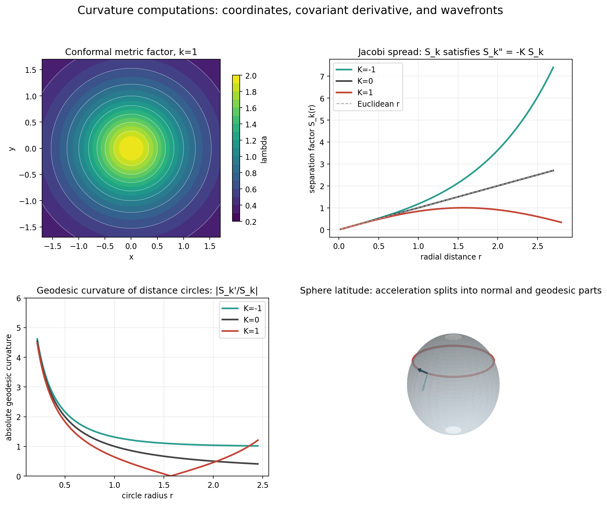
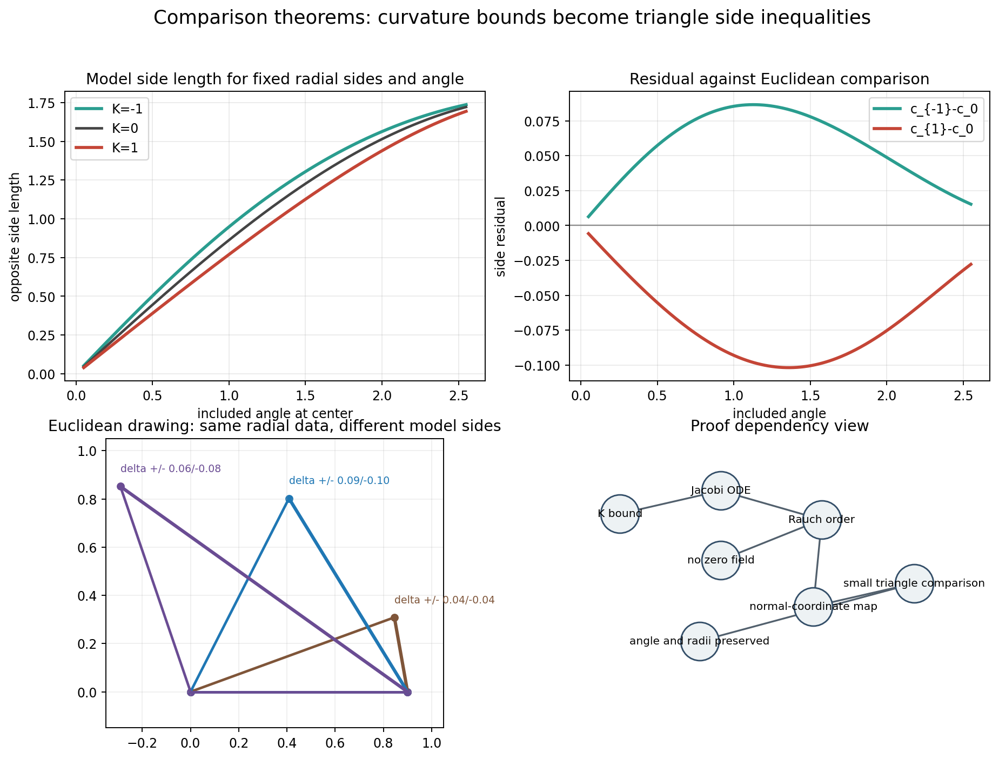

Printed pages 209-240; PDF pages 224-255.
Notebook: 06-curvature-of-riemannian-metrics.ipynb
Lecture aim: turn local metric formulas into comparison statements about geodesic triangles.
Original lecture prose and visuals grounded in the assigned source span, with notebook-generated validation badges.
\(g_{ij}(x)\)
measures coordinate vectors.
\(\Gamma^k_{ij}\)
corrects differentiation.
\(K\)
controls geodesic spreading.
\(\triangle M \leftrightarrow \triangle_k\)
orders model triangles.
The chapter's arc is a translation chain: coordinate data → covariant calculus → Jacobi fields → metric comparison.
\(ds^2 = \sum g_{ij}(x)\,dx^i dx^j\)
Coordinates label points; the metric decides lengths and angles of coordinate directions.

Artifact: coordinate grid, wavefront behavior, and curvature inspection targets.
\(\Gamma^x_{xx}=\phi_x,\quad \Gamma^x_{xy}=\phi_y,\quad \Gamma^x_{yy}=-\phi_x\)
\(\Gamma^y_{xx}=-\phi_y,\quad \Gamma^y_{xy}=\phi_x,\quad \Gamma^y_{yy}=\phi_y\)
\(\lambda(x,y)=\dfrac{2}{1+k(x^2+y^2)},\qquad g=\lambda^2(dx^2+dy^2)\)
Gaussian curvature \(=k\)
\(K-k=0\)
\((\nabla_i V)^k=\partial_i V^k+\Gamma^k_{ij}V^j\)
One term differentiates components. The other differentiates the frame implicitly carried by the coordinates.
Geodesic curvature is the part of acceleration tangent to the surface.
Normal curvature is the part seen by the ambient normal.
A surface geodesic has zero geodesic curvature even when it bends in space.
\(S_1(r)=\sin r\)
spreading slows and reconverges.
\(S_0(r)=r\)
Euclidean linear spreading.
\(S_{-1}(r)=\sinh r\)
spreading accelerates outward.
Polar model metric: \(ds^2=dr^2+S_k(r)^2\,d\theta^2\), with \(S_k''+kS_k=0\).
Move the curvature parameter and watch distance circles switch from compression to linear growth to expansion.
Open constant-curvature-metric-lab.htmlSmall circles and nearby radial geodesics reveal whether the metric behaves above or below the Euclidean model.
positive \(K\): geodesics focus
negative \(K\): geodesics spread
\(J'' + R(J,\dot\gamma)\dot\gamma = 0\)
A Jacobi field differentiates a family of geodesics, so its norm measures infinitesimal separation.
For fixed radial data \(a=b=0.9\):

Artifact: comparison-triangle-residuals.png
Local curvature control enters through normal coordinates and exponential maps.
Triangle comparison becomes a metric language for curvature bounds.
Global comparison requires completeness and lower curvature control.
Jacobi-field inequalities provide the local mechanism; theorem hypotheses decide how far the comparison can be transported.
| Section | Topic | Deck Treatment | Validation |
|---|---|---|---|
| 6.1 | Coordinate computations | Metric matrix, Christoffel symbols | symbolic residuals |
| 6.2 | Covariant derivative | Levi-Civita rule and conditions | conformal pattern |
| 6.3 | Geodesic and Gaussian curvatures | intrinsic/extrinsic split, distance circles | \(|S_k'/S_k|\) model reading |
| 6.4 | Meaning of Gaussian curvature | metric distortion and Jacobi spread | \(S_k''+kS_k=0\) |
| 6.5 | Comparison theorems | Rauch roadmap, triangle residuals | residual sign contract |
Given a claimed triangle comparison, ask which local calculation certifies it and which global condition allows it to persist.
formula check + hypothesis check = theorem check
Use \(g_{ij}\) to measure the grid.
Use \(\Gamma^k_{ij}\) to differentiate geometrically.
Use \(K\) to read geodesic spreading.
Use model triangles to state metric consequences.
Audit trail: Christoffel residuals vanish, \(K-k=0\), \(S_k\) solves the Jacobi equation, and model triangle residuals have the expected signs.